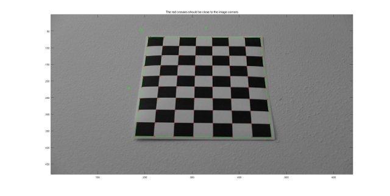
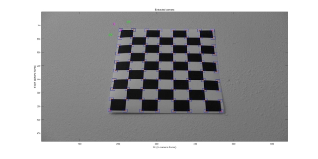
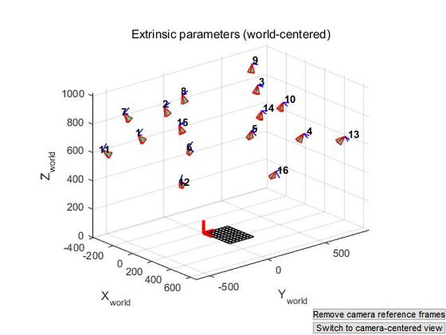
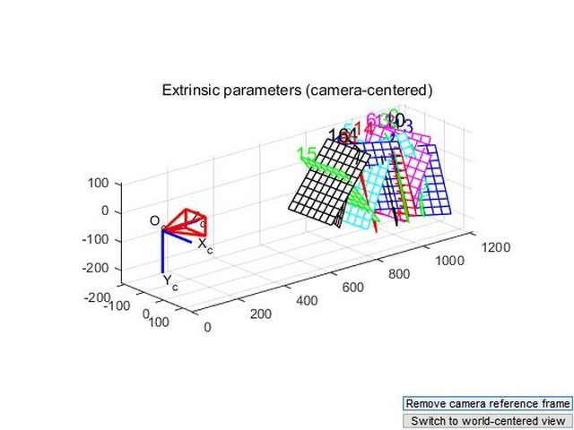
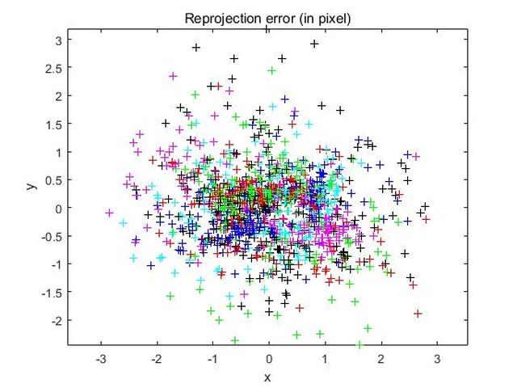
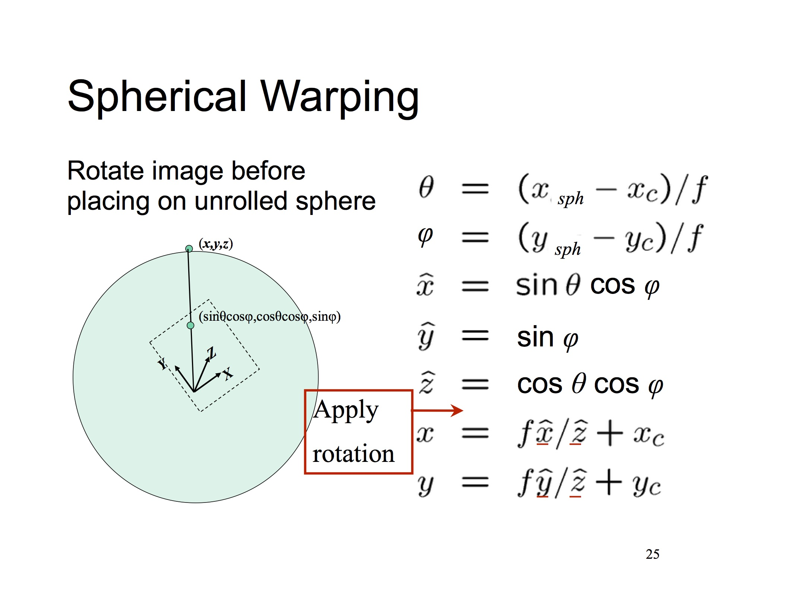
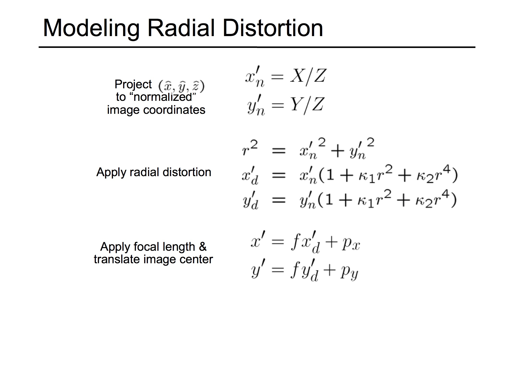

1. Preparaion Work
The very first job is to compute focal length. I use Jean-yves' Calibration Toolbox and follow those steps in its guidance.
I take 16 photos for the cheakboard pattern from 16 different angle.
Then extract the grid corner. I set (Wintx,Winty) to (5,5), and size dx is 30mm, also dy is 30mm. One of 16 results is shown below.
|  |  |
Then call functions Calibration and Recomp.corners, I can get more precise focal length. I use this f as focal length and do distortion with coefficients k1 and k2.
|  |  |  |
The result data after calibration are
Focal Length: fc = [ 951.53505 1084.73918 ] uncertainty [ 14.62528 17.53058 ]
Principal point: cc = [ 376.22201 176.93848 ] ? [ 23.84237 34.71087 ]
Skew: alpha_c = [ 0.00000 ] ? [ 0.00000 ] => angle of pixel axes = 90.00000 uncertainty 0.00000 degrees
Distortion: kc = [ -0.26251 0.50053 -0.01008 0.00897 0.00000 ] uncertainty [ 0.14172 1.32070 0.00634 0.00706 0.00000 ]
Pixel error: err = [ 0.94628 0.67602 ]
Image size: 640*480
Extra Credit: This is the comparison between images with distortion and without distortion.
|
|
|
2. Implementation Detail
(1) I use SIFT features, becuase this algorithm is much more robust than another algorithms. But the features matcher I use is ratio feature matching I inplemented in Project1.
(2) I implement WarpSpherical.cpp by using the principle from our leature.
Convert the given spherical image coordinate into the corresponding planar image coordinate using the coordinate transformation equation from the lecture notes 06-1-stitching Page25 (Spherical Warping).
Apply radial distortion using the equation from the lecture notes 05-cameras-3 Page50 (Modeling Radial Distortion).
|  |  |
(3) Then I implement FeatureAlign.cpp to compute the alignment of two images. AlignPair takes two feature sets, f1 and f2, the list of feature matches obtained from the SIFT features, a motion model, and estimates and inter-image transform matrix M. For this project, motion model is only translation which just have two freedom. AlignPair uses RANSAC (RAndom SAmpling Consensus) to pull out a minimal set of feature matches, estimates the corresponding motion and then invokes countInliers to count how many of the feature matches agree with the current motion estimate. After repeated trials, the motion estimate with the largest number of inliers is used to compute a least squares estimate for the motion, which is then returned in the motion estimate M. CountInliers computes the number of matches that have a distance below RANSACthresh is computed. It also returns a list of inlier match ids. LeastSquaresFit computes a least squares estimate for the translation using all of the matches previously estimated as inliers. It returns the resulting translation estimate in the last column of M. Below is the comparison of my pairlist of yosemite images set with the pairlist project2 alreay provided.